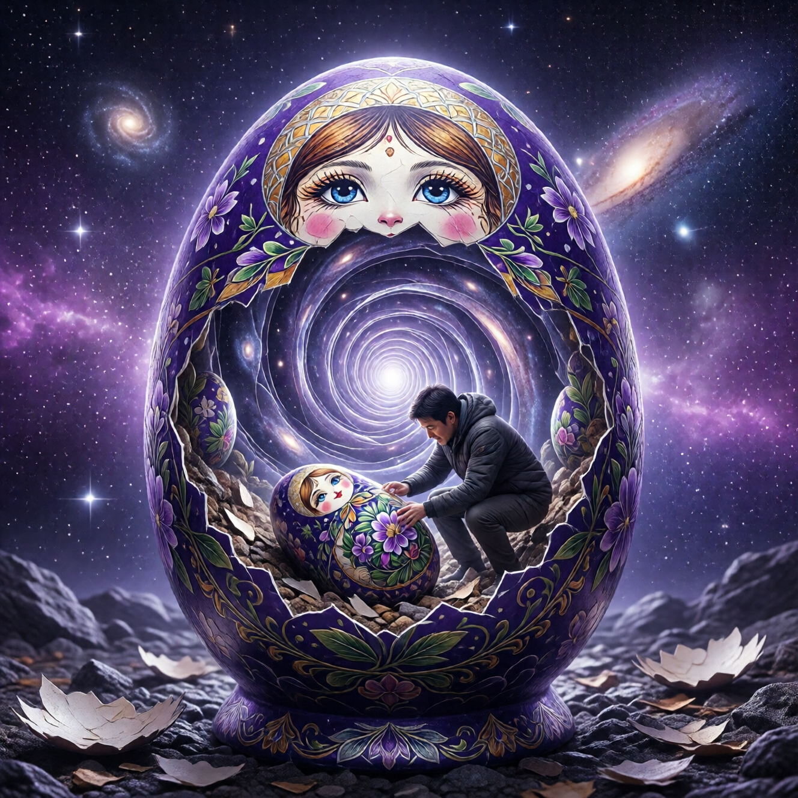

Новая скорлупа: цикл продолжается

Сюрприз
У меня для тебя новость. Возможно, неприятная.
Вылупившись из одного яйца — ты обнаруживаешь себя внутри другого.
Большего. Тоньше или толще — зависит от случая. Но — яйца.
Это как пройти сложный уровень в игре и обнаружить, что это был... обучающий режим. А настоящая игра только начинается.
Помнишь анекдот про мужика, который всю жизнь копил на квартиру? Купил. Сидит, радуется. А потом — ипотека, коммуналка, ремонт, соседи сверху с перфоратором в шесть утра... Поздравляю с квартирой. Добро пожаловать в новые проблемы.
С вылуплением — похоже.
И это — не ошибка. Это — дизайн.
Почему так устроено
Вселенная — матрёшка. Яйца внутри яиц внутри яиц.
Каждое вылупление — переход на следующий уровень. Но уровни не заканчиваются.
Почему? Потому что рост — бесконечен. Нет «финального просветления». Нет точки, где ты «готов навсегда».
Представь: ты думал, что гора одна. Залез на вершину — увидел следующую. Ещё выше. Залез на ту — увидел ещё. И так — до горизонта.
Это Гималаи духовного роста. Эверест — не конец. Это — первый серьёзный пик.
Есть — путь. Без конца. Без остановки.
Это пугает? Или освобождает?
Знаешь, один мастер сказал: «Плохая новость — нет никакого финиша. Хорошая новость — нет никакого финиша.»
Одна и та же новость. Всё зависит от того, как смотришь.
Отличия нового яйца
Новое яйцо — не копия старого. Оно — другое.
Скорлупа тоньше
Легче видеть сквозь. Легче делать трещины. Меньше иллюзий о её «реальности».
Желток другой
Новые задачи. Новые отношения. Новые роли. Питательная среда — другая.
Ты другой
Опыт первого вылупления — с тобой. Ты знаешь, как это работает. Ты — не новичок.
Цикл
Вот как это выглядит:
``` Яйцо 1 ↓ Рост → Давление → Трещины → Вылупление ↓ Яйцо 2 ↓ Рост → Давление → Трещины → Вылупление ↓ Яйцо 3 ↓ ... ```
Каждый цикл — быстрее. Потому что ты учишься.
Первое яйцо может занять годы — или всю жизнь. Второе — меньше. Третье — ещё меньше.
Со временем — ты вылупляешься в реальном времени. Не ждёшь накопления — выходишь сразу, как созреваешь.
Ловушки между яйцами
Ловушка: «Теперь я свободен»
Вылупился — и думаешь, что всё. Скорлупы больше нет.
Есть. Просто — другая.
Это как выпускник университета, который думает: «Всё, отучился, теперь я знаю всё!» А потом выходит на работу и понимает, что настоящее обучение только начинается.
Или как молодожён, который думает, что свадьба — это финиш. Дружище, это был старт. Финиш — это золотая свадьба. Если доживёте.
Признак этой ловушки: ты перестал искать. Перестал сомневаться. «Всё понял».
Как только сказал «всё понял» — поздравляю, ты в новом яйце. И даже не заметил.
Ловушка: «Опять яйцо?!»
Обратная сторона. Отчаяние. «Какой смысл вылупляться, если снова яйцо?»
Это как сказать: «Какой смысл есть, если опять проголодаюсь?» Или: «Зачем дышать, если придётся выдохнуть?»
Жизнь — это процесс, не результат. Никто не ест один раз на всю жизнь. Никто не дышит один раз навсегда.
Смысл — в движении. Не в точке назначения.
Каждое яйцо — больше предыдущего. Каждый выход — расширение.
Первое яйцо — ты был личинкой. Второе — гусеницей. Третье — коконом. Дальше — бабочка. Потом — что-то, чему ещё нет названия.
Ловушка: «Я вернусь в старое»
Ностальгия по предыдущему яйцу. «Там было проще».
Назад — нельзя. Только вперёд. Через новое яйцо.
Признаки нового яйца
Как понять, что ты уже в следующем яйце?
- Появились новые ограничения (которых раньше не видел)
- Новые роли, которые жмут
- Новое «понимание», которое стало догмой
- Ощущение, что снова что-то давит
Если узнаёшь — добро пожаловать. Процесс продолжается.
Мастерство вылупления
Со временем ты становишься мастером.
Не мастером просветления. Не мастером истины. Мастером вылупления.
Как опытный альпинист. Он не перестаёт бояться гор. Но он знает: где ставить ногу, как держать верёвку, когда отдыхать. Страх есть — но есть и навык.
Ты узнаёшь:
- Признаки давления (о, опять эта тяжесть в груди — привет, скорлупа)
- Места тонкой скорлупы (здесь уже трескалось — здесь и треснет)
- Инструменты для трещин (этот вопрос работал раньше — сработает и сейчас)
- Время для выхода (не раньше, не позже — когда созрел)
И главное — ты перестаёшь бояться. Не потому что не страшно. А потому что знаешь: ты уже делал это. Ты справишься.
Это как рожать. Первый раз — ужас. Второй — всё ещё больно, но ты знаешь, что переживёшь. Третий — «ладно, давай уже, я знаю, как это работает».
Бесконечная игра
Есть два типа игр.
Конечные игры — цель: победить. Есть финиш. Есть победитель.Футбол. Шахматы. Выборы. Олимпиада.
Бесконечные игры — цель: продолжать играть. Нет финиша. Нет победителя.Наука. Искусство. Любовь. Жизнь.
Вылупление — бесконечная игра.
Ты не «побеждаешь» скорлупу. Ты — продолжаешь. Яйцо за яйцом. Трещина за трещиной. Выход за выходом.
Знаешь, почему дети играют? Не чтобы выиграть. А чтобы играть. Сам процесс — награда.
Мы, взрослые, забыли это. Нам нужна цель, результат, медаль. «Зачем бегать, если не марафон? Зачем рисовать, если не на выставку? Зачем вылупляться, если не в нирвану?»
А затем, что это — и есть жизнь. Не результат — процесс.
И в этом — не поражение. В этом — свобода.
Вопрос масштаба
Интересно: что если вся Вселенная — яйцо?
Что если все эти яйца внутри яиц — внутри одного большого?
И когда-нибудь... коллективное вылупление?
Представь: вся планета — один огромный желток. Человечество — растущий зародыш. И когда-нибудь — скорлупа треснет. И мы выйдем... куда?
К звёздам? В другие измерения? К встрече с тем, кто нас «высиживает»?
Я не знаю. Никто не знает.
Но это — красивая мысль. И, возможно, правда.
А может, мы уже вылупляемся. Прямо сейчас. Коллективно. Медленно. Со всеми этими кризисами, переменами, пандемиями. Может, это — родовые схватки планеты?
Кто знает. Но думать об этом — захватывает дух.
Практика: Картография нового яйца
Если ты чувствуешь, что в новом яйце:
- Опиши скорлупу. Что сейчас ограничивает? Какие стены?
- Опиши желток. Чем питаешься? Какие роли? Какие отношения?
- Найди трещины. Где уже видно свет? Где тоньше?
- Вспомни опыт. Как ты выходил раньше? Что помогало?
- Наметь направление. Не план — направление. Куда клевать?
Итог
Вылупление — не конец. Это — бесконечный цикл.
Яйцо за яйцом. Скорлупа за скорлупой.
Но с каждым разом — легче. С каждым разом — больше.
И в какой-то момент — ты понимаешь: дело не в том, чтобы выйти. Дело — в движении.